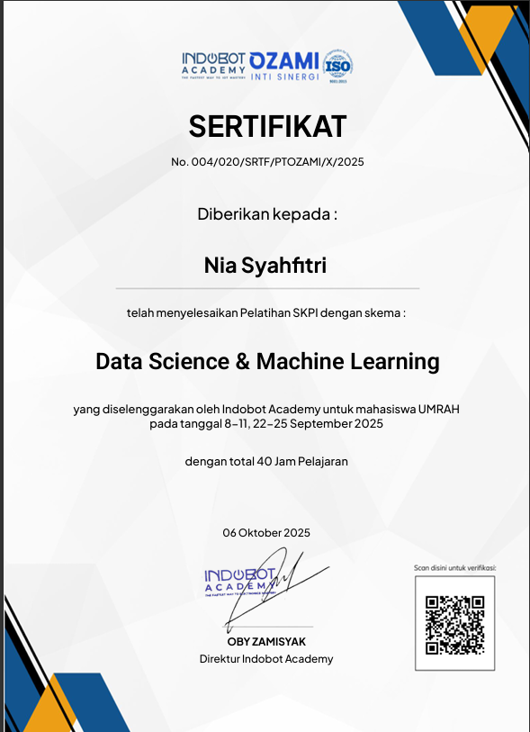
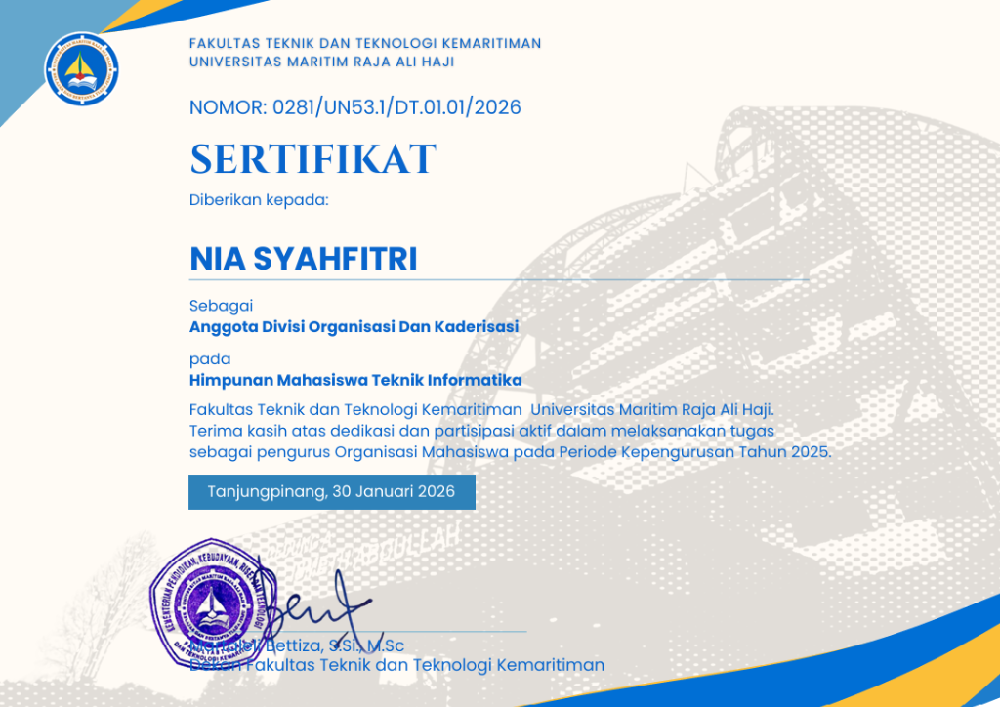

About Me

Mahasiswa Teknik Informatika yang Berdedikasi dan Berintegritas
Saya adalah mahasiswi semester 6 Program Studi S1 Teknik Informatika di Universitas Maritim Raja Ali Haji (UMRAH). Ketertarikan saya berpusat pada bidang pengembangan situs web (Front-End Web Development) dan perancangan antarmuka pengguna (UI/UX Design).
Bagi saya, teknologi koding bukan sekadar baris-baris instruksi komputasi, melainkan media kreatif untuk memecahkan permasalahan dunia nyata di masyarakat—khususnya dalam memajukan operasional UMKM lokal melalui digitalisasi yang bertanggung jawab. Saya berkomitmen penuh untuk mengaplikasikan prinsip moral dan etika profesi IT dalam setiap proyek pengembangan perangkat lunak.
Education
Universitas Maritim Raja Ali Haji (UMRAH)
S1 Teknik Informatika - Semester 6
Mempelajari rekayasa perangkat lunak, sistem basis data, pemrograman web/mobile, manajemen proses bisnis, dan Etika Profesi IT. Aktif dalam tim proyek koding kolaboratif.
SMA Negeri 1 Bintan Timur
MIPA (Matematika & Ilmu Pengetahuan Alam)
Mengembangkan pemikiran logis dan analisis eksakta. Berpartisipasi aktif dalam kegiatan ekstrakurikuler sekolah di bidang sains dan teknologi informasi.
SMP Negeri 1 Bintan Timur
Pendidikan Menengah Pertama
Membangun pemahaman awal terkait komputasi dasar, logika matematika, serta pengoperasian perangkat komputer secara terstruktur.
Certifications


Professional IT Ethics
Sebagai mahasiswi Teknik Informatika di Universitas Maritim Raja Ali Haji (UMRAH), saya percaya bahwa pengembangan teknologi tidak boleh lepas dari integritas moral. Berikut adalah 5 prinsip utama etika profesi IT yang saya jadikan acuan dalam koding:
Integritas
Selalu bertindak jujur, transparan, dan konsisten menyelaraskan tindakan dengan komitmen kejujuran akademis maupun profesional.
Kerahasiaan
Menjaga dan menghargai kerahasiaan informasi sensitif serta hak privasi data pribadi pengguna sistem secara mutlak.
Kompetensi
Berkomitmen untuk terus belajar meningkatkan wawasan, kompetensi teknis, dan standar kualitas hasil rekayasa kode.
Kepatuhan Hukum
Mematuhi regulasi hukum yang berlaku, termasuk undang-undang ITE, hak cipta software, dan hak kekayaan intelektual (HAKI).
Dampak Sosial
Mendesain solusi teknologi informasi yang bernilai positif bagi masyarakat dan memajukan digitalisasi UMKM lokal secara adil.
Get to Know Me (Q&A)
Saya sangat menyukai bagaimana baris-baris kode pemrograman dapat diterjemahkan menjadi solusi nyata untuk memecahkan berbagai permasalahan di kehidupan sehari-hari. Di Teknik Informatika, saya belajar cara berpikir logis, sistematis, dan menciptakan efisiensi melalui produk perangkat lunak.
Saya sangat tertarik pada bidang Front-End Web Development dan UI/UX Design. Bagi saya, menyatukan fungsionalitas aplikasi dengan tampilan visual yang ramah pengguna (user-friendly) serta estetik merupakan tantangan kreatif yang sangat menyenangkan.
Teknologi informasi memiliki dampak yang sangat besar di masyarakat. Tanpa dibekali integritas, kejujuran, dan penghormatan terhadap privasi/kerahasiaan data, teknologi berpotensi untuk merugikan orang lain. Karena itu, etika profesi adalah jangkar moral yang wajib dimiliki setiap calon profesional IT.